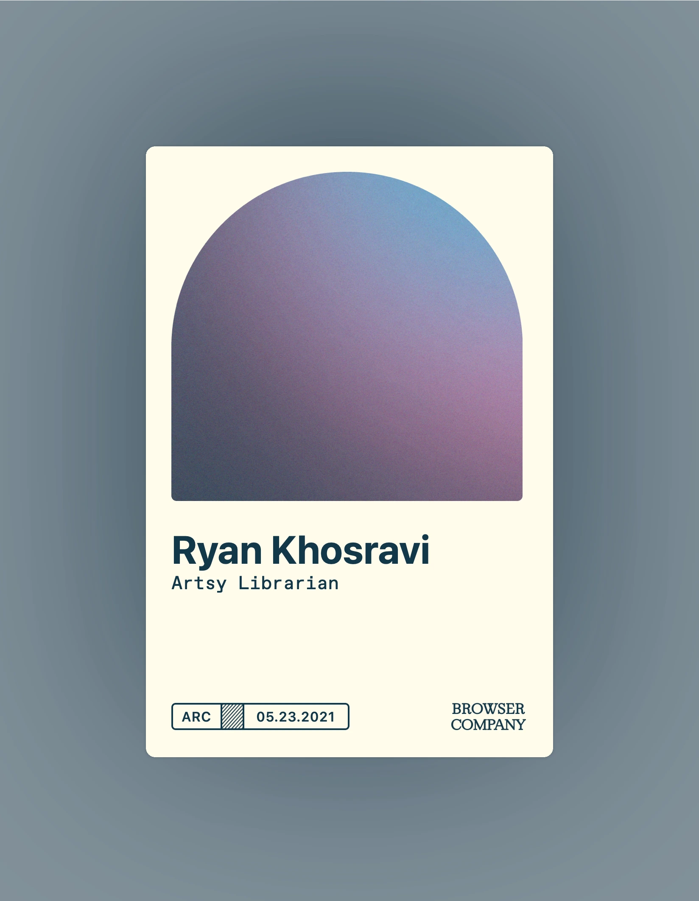
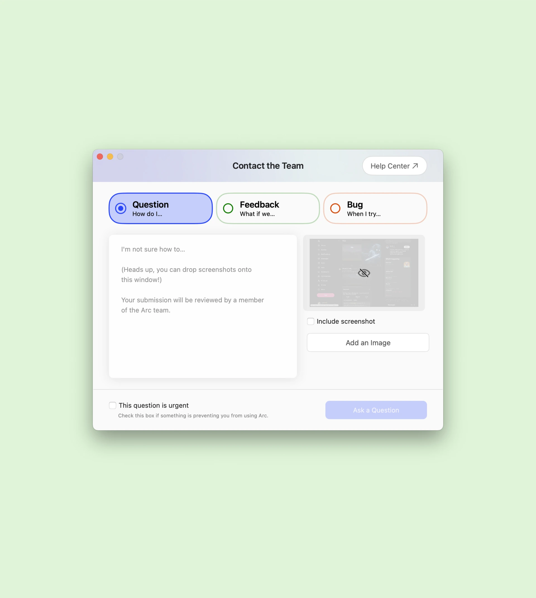

Tech
I help make products sound like they know what they’re doing. That usually means onboarding, documentation, UX copy, content strategy, brand voice, and all the tiny sentences people only notice when they’re confusing.
 Onboarding FlowThe Browser CompanyA first-run experience for Arc, because a new browser already asks enough of you.
Onboarding FlowThe Browser CompanyA first-run experience for Arc, because a new browser already asks enough of you.
 Help CenterNotionContent strategy, information architecture, and support writing—including when AI made the questions weirder.
Help CenterNotionContent strategy, information architecture, and support writing—including when AI made the questions weirder.
 In-App EducationThe Browser CompanyProduct education that shows up before a complex feature starts feeling like homework.
In-App EducationThe Browser CompanyProduct education that shows up before a complex feature starts feeling like homework.

Membership CardsThe Browser Company2,500 whimsical randomized titles for the end of onboarding. @ArcInternet CommunityThe Browser CompanyA private Twitter community for Arc’s beta users.
@ArcInternet CommunityThe Browser CompanyA private Twitter community for Arc’s beta users.

Bug ReporterThe Browser CompanyConfirmation messages that change with the bug, because a typo and a total meltdown deserve different responses.